library(tidyverse)
library(MASS)
library(plotly)We’ll first simulate positively correlated x and z variables:
set.seed(1) # so we can replicate our results
data = mvrnorm(n=100, mu=c(0,0), Sigma = matrix(c(1, 0.8, 0.8, 1), nrow=2), empirical=TRUE) # 100 obs, mean = 0, correlation = 0.8
x = data[, 1]
z = data[, 2]
correlation <- cor(x, z)Next, let’s make it so that the dependent variable (y) is positively associated with x, and negatively with z:
p1 <- 2 # positive effect of x
p2 <- -2 # negative effect of z
y <- p1*x + p2*z + rnorm(100, sd=1) # independent effects of x and z, plus noiseThen, calculate linear model residuals “y given z” and “x given z”, that is, “what is left of y when we distill away the effect of z or x”:
mod1 <- lm(y ~ z)
resid.1 <- resid(mod1)
mod2 <- lm(x ~ z)
resid.2 <- resid(mod2)Put everything in a dataframe, and fit a simple OLS regression model with both x and z as predictors:
data <- data.frame(y=y, x=x, z=z, resid.1 = resid.1, resid.2 = resid.2)
head(data)## y x z resid.1 resid.2
## 1 -0.6324690 0.31085496 0.8317904 -0.3650727 -0.35457736
## 2 1.7950167 -0.05204644 -0.1051181 1.7278007 0.03204806
## 3 0.2469898 0.52257920 1.1923785 0.6431684 -0.43132361
## 4 1.7644178 0.34124925 -0.7064135 1.4824521 0.90638008
## 5 -1.9812570 0.68851698 0.5365277 -1.8193123 0.25929479
## 6 1.2085382 -2.11709514 -1.4725334 0.6529565 -0.93906839model <- lm(y~x+z, data=data)
summary(model)##
## Call:
## lm(formula = y ~ x + z, data = data)
##
## Residuals:
## Min 1Q Median 3Q Max
## -2.94359 -0.43645 0.00202 0.63692 2.63941
##
## Coefficients:
## Estimate Std. Error t value Pr(>|t|)
## (Intercept) 0.02967 0.10434 0.284 0.777
## x 2.05647 0.17478 11.766 <2e-16 ***
## z -2.00232 0.17478 -11.456 <2e-16 ***
## ---
## Signif. codes: 0 '***' 0.001 '**' 0.01 '*' 0.05 '.' 0.1 ' ' 1
##
## Residual standard error: 1.043 on 97 degrees of freedom
## Multiple R-squared: 0.6074, Adjusted R-squared: 0.5993
## F-statistic: 75.02 on 2 and 97 DF, p-value: < 2.2e-16Obtain the slope (coefficient) of x and the model intercept (value of y when both x and z = 0), and visualize both variables:
x_coef <- model$coefficients[2] # coefficient of x
intercept <- model$coefficients[1] # intercept
# Visualize both variables
data %>%
gather(IV, value, x, z) %>%
ggplot(aes(x=value, y=y)) +
geom_point() +
geom_smooth(method="lm") +
facet_wrap("IV") +
theme_bw()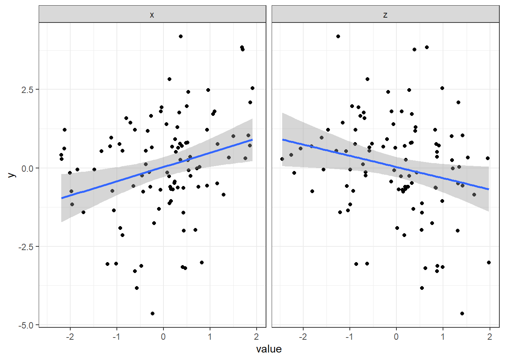
Now, focus on the x variable:
ggplot(data, aes(x=x, y=y)) +
geom_smooth(method="lm", fullrange=TRUE) +
geom_point() +
theme_bw()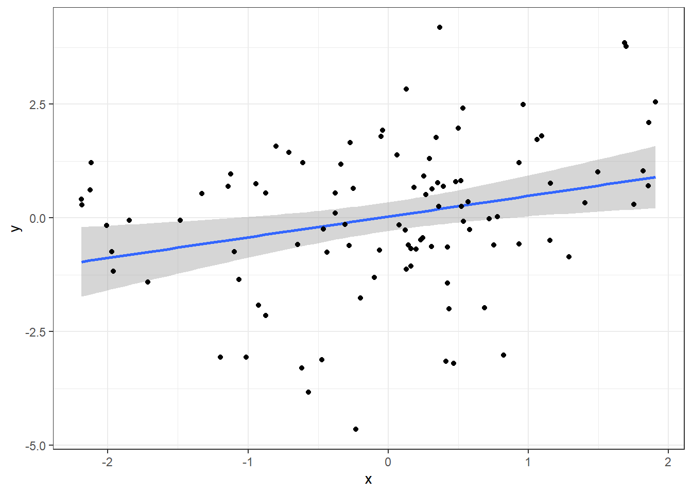
Plot the model prediction abline for x, which is the model prediction controlling for z (from the linear model y ~ x + z):
ggplot(data, aes(x=x, y=y)) +
geom_smooth(method="lm", fullrange=TRUE) +
geom_point() +
theme_bw() +
geom_abline(intercept = intercept, slope = x_coef, colour="red", size=1)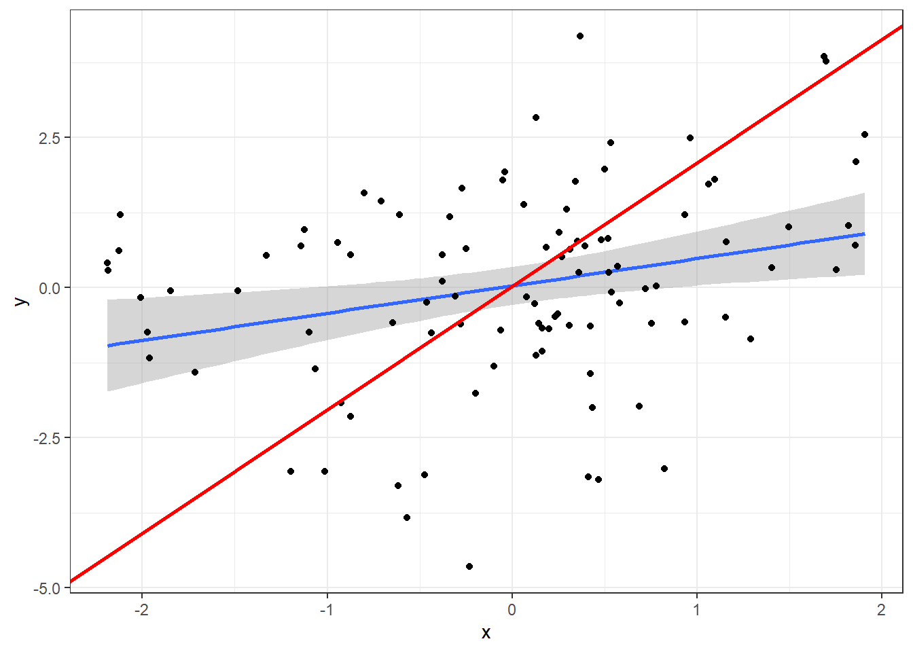
Plot data points for resid(lm(y ~ z)) and resid(lm(x ~ z)), that is, the values of y and x when z has been “distilled” away from both:
ggplot(data, aes(x=x, y=y)) +
geom_smooth(method="lm", fullrange=TRUE) +
geom_point(alpha=.05) +
geom_abline(intercept = intercept, slope = x_coef, colour="red", size=1) +
geom_point(aes(x=resid.2, y=resid.1), color="salmon") +
theme_bw()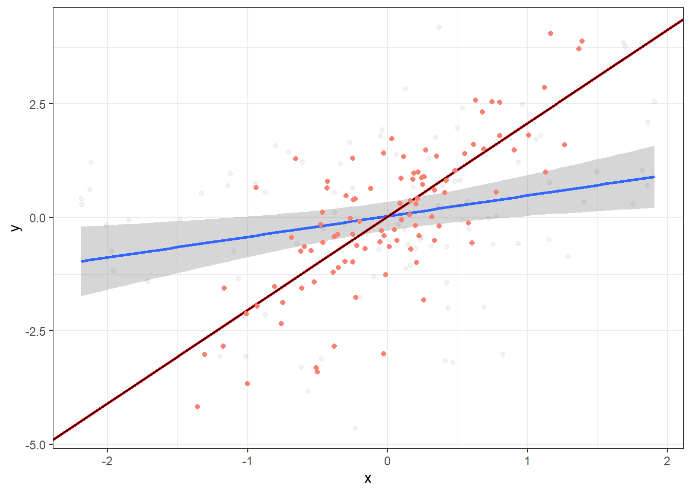
Finally, fit OLS regression on the residuals (notice it’s identical to the regression slope for x controlling for z):
ggplot(data, aes(x=x, y=y)) +
geom_smooth(method="lm", fullrange=TRUE) +
geom_point(alpha=.05) +
geom_abline(intercept = intercept, slope = x_coef, colour="red", size=1) +
geom_point(aes(x=resid.2, y=resid.1), color="salmon") +
geom_smooth(aes(x=resid.2, y=resid.1), method="lm") +
theme_bw()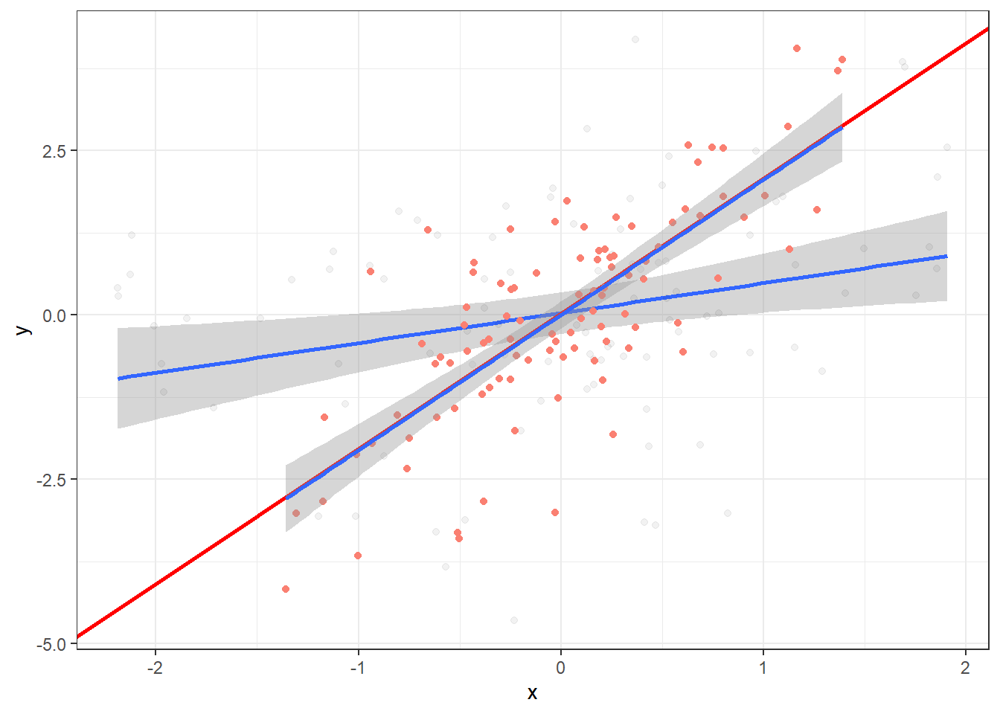
Below I’ve written a simple function that does all of the above. The point is to help visualize how altering 1) the correlation between x and z, and 2) the slopes of x and z on y affects the model predictions. Feel free to play around with it, but if you break it, you get to keep both parts.
OLS_visualizer <- function(slope_x, slope_z, correlation, output="2d") {
set.seed(1)
data = mvrnorm(n=100, mu=c(0,0), Sigma = matrix(c(1, correlation, correlation, 1), nrow=2), empirical=TRUE)
x = data[, 1]
z = data[, 2]
correlation <- cor(x, z)
p1 <- slope_x
p2 <- slope_z
y <- p1*x + p2*z + rnorm(100, sd=1)
# y, given z
mod1 <- lm(y ~ z)
resid.1 <- resid(mod1)
# x1, given x
mod2 <- lm(x ~ z)
resid.2 <- resid(mod2)
dataframe <- data.frame(y=y, x=x, z=z, resid.1 = resid.1, resid.2 = resid.2)
ggobject <- ggplot(dataframe, aes(x=x, y=y)) +
geom_smooth(method="lm", fullrange=TRUE, aes(color="Not controlling for z"), fill="blue", alpha=.15) +
theme_bw(base_size=13) +
geom_point(alpha=.05, aes(color="Not controlling for z")) +
geom_point(aes(x=resid.2, y=resid.1, color="Controlling for z"), alpha=.5) +
geom_smooth(aes(x=resid.2, y=resid.1, color="Controlling for z"), fill="red", alpha=.15, method="lm") +
labs(title=paste(" Correlation between x and z =", round(correlation,2), "\n", "Regression: y =", slope_x, "*x", "+", slope_z, "*z"),
color=NULL) + theme(legend.position="bottom") +
scale_color_manual(values=c("salmon", "blue")) +
guides(color=guide_legend(override.aes=list(fill=NA)))
plotly_object <- plot_ly(x=x, y=y, z=z, type="scatter3d", mode="markers")
if (output == "2d") {
return(ggobject)
} else {
return(plotly_object)
}
}If x and z have shared variance and opposing associations with y, controlling for z strengthens the link between x and y:
OLS_visualizer(2,-2,0.8) #correlation between x and z = 0.8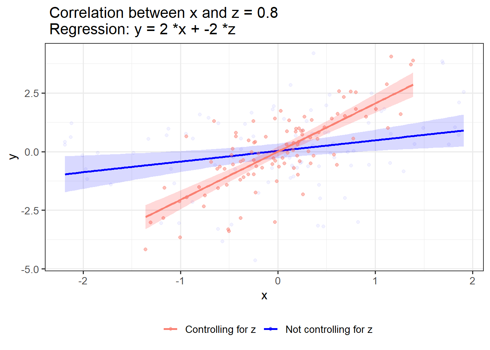
If x and z have shared variance and similar association with y, controlling for z weakens the link between x and y:
OLS_visualizer(2,2,0.8)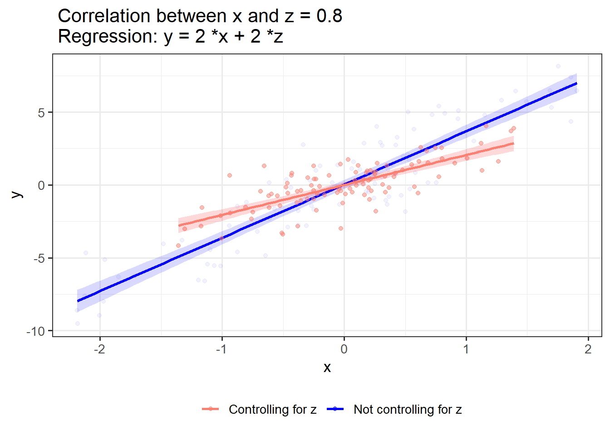
If x and z have no shared variance, controlling for z has no effect on the effect of x on y:
OLS_visualizer(2,2,0) #correlation between x and z = 0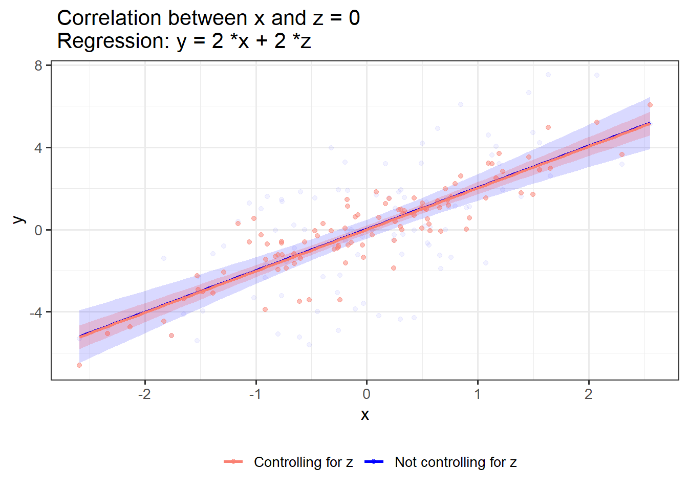
OLS_visualizer(2,-2,0)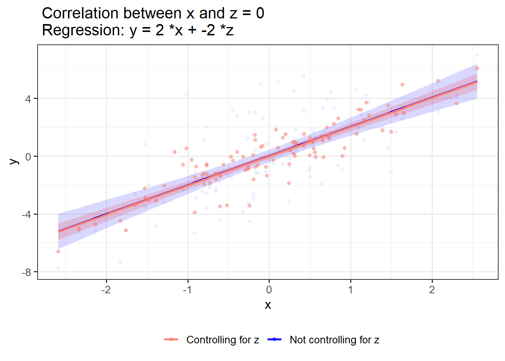
OLS_visualizer(0,0,0)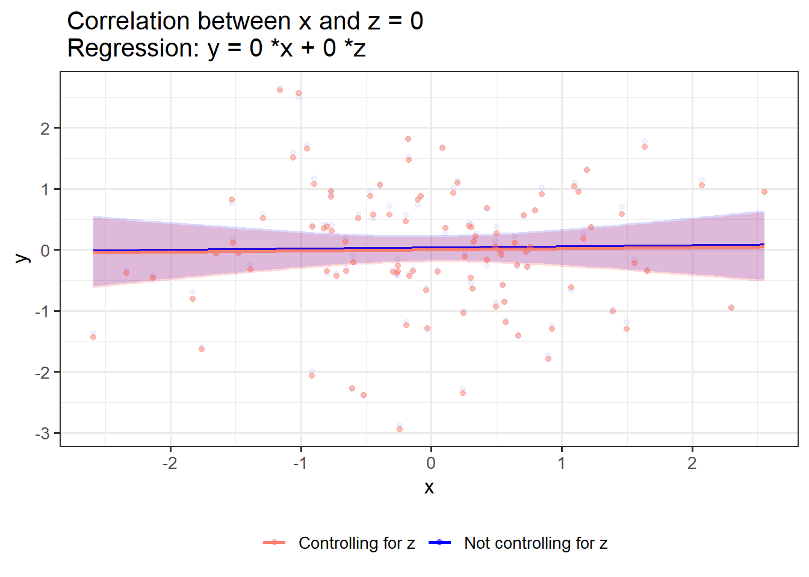
If x and z have shared variance but no association with y, controlling for z merely reduces the variability in x:
OLS_visualizer(0,0,0.8)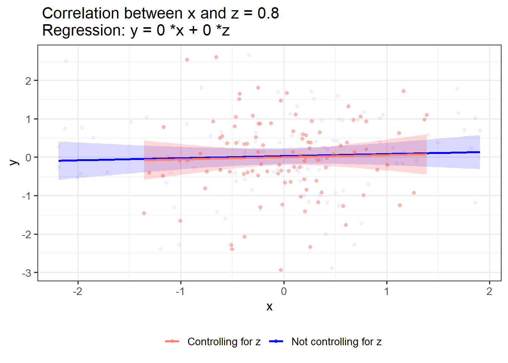
3d scatterplot:
OLS_visualizer(2,-2,0.8, "3d")